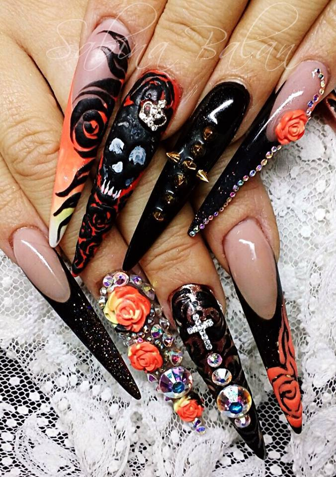

Programări în privat
Programările se fac în mesaj privat pe Facebook. Prima programare nu se stabilește telefonic.
Construcție cu gel, artă lucrată fir cu fir și detalii pe care le vezi doar de aproape: flori acryl 3D, pietre Swarovski și modele tip tattoo. Semnat de Sabina Balan, cu 25 de ani la masa de manichiură.

Sunt Sabina Balan, tehnician în manichiură cu 25 de ani de experiență, în Satu Mare. Lucrez construcție și umplut de gel, pedichiură de gel și gelac, iar la mine fiecare set pleacă cu o poveste: o floare crescută în acryl, o piatră care prinde lumina, un model desenat fir cu fir.
Nu lucrez pe grabă și nu lucrez pe repede-înainte. La masa mea se ascultă muzică bună, mâinile stau relaxate, iar rezultatul se vede — unghii perfecte și sănătoase.
„Dacă doriți unghii perfecte și sănătoase, căutați mereu profesioniști.”
Prețul final depinde de forma, lungimea și modelul ales. Construcțiile de gel se fac pe tips sau sub tips — nu se mai lucrează cu șablon.
Îmi place lucrarea dramatică și curată în același timp: trandafiri crescuți în acryl, cristale care prind lumina, contururi desenate cu mâna. De la migdală delicată până la stiletto EXTREME — forma și povestea le alegi tu, execuția o duc eu până la ultimul fir.
Programările se fac în mesaj privat pe Facebook. Prima programare nu se stabilește telefonic.
Se lucrează fără grabă, cu muzică plăcută. Te rog mâinile relaxate și fără telefon în timpul lucrării.
Seturile pentru evenimente se programează din timp și necesită un avans la rezervare.
Te rog vino fără persoane suplimentare, ca timpul de la masă să rămână complet al tău.
| Programări | Doar cu programare |
|---|---|
| Rezervări | În privat, pe Facebook |
Se lucrează pe bază de programare — scrie-mi din timp ca să prindem o oră care ți se potrivește.
Scrie-mi în privat pe Facebook cu modelul care îți place și stabilim împreună forma, lungimea și data.